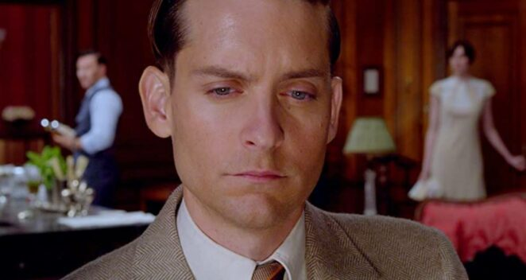

Film :
- Catch me if you can
Steven Spielberg'in yönetmenliğini üstlendiği filmde, 19 yaşında dahi olmayan Frank Abagnale
Jr.'ın, Pan American World havayolu şirketinde pilot, Georgia'da doktor ve Louisiana'da savcı
kılığına bürünerek milyonlarca dolarlık çek sahtekârlığını nasıl yaptığı anlatılmaktadır.
- Five feet apart
Five Feet Apart, iki hasta gencin hastanede yollarının kesişmesi ile değişen yaşamlarını konu ediyor.
Stella Grant, 17 yaşında olan bir genç kızdır. Bilgisayarına bağlı bir hayat süren Stella, yaşıtları
gibi gezip dolaşmak yerine zamanını çoğunu hastanede geçirmek zorundadır.
- The Great Gatsby

Roman,1922 yazında müreffeh Long Island'daki hayali West Egg kasabasında,romanın
ana karakteri,gizemli genç milyoner Jay Gatsby ile saplantılı şekilde âşık olduğu Daisy
Buchanan arasında geçen olayları, bir başka roman karakterinin gözünden( Nick Carraway) anlatır. F.Scott Fitzgerald'ın baş yapıtıdır.
Dizi :
- How i met your mother

Ted Mosby (Josh Radnor), arkadaşları ile kendisine küçük bir dünya yaratmış bir mimardır.
En iyi arkadaşı Marshall Eriksen'in (Jason Segel) nişanlısı ve dokuz yıllık sevgilisi Lily Aldrin'e
(Alyson Hannigan) evlenme teklif etmesinin ardından yalnız kalacağı korkusu ile kendisine ruh ikizi olan "o" kızı aramaya başlar.
- Breaking Bad
Breaking Bad, Vince Gilligan tarafından tasarlanmış ABD drama televizyon dizisidir.
50 yaşında lisede kimya öğretmeni olan Walter White (Bryan Cranston), bir oto yıkamada
ek iş yapmaktadır ancak bir süre sonra ileri derecede akciğer kanseri olduğunu öğrenir.
- Prison break
Dizi, idam cezası alan kardeşini hapishaneden kurtarmak için bir kaçış planı planlayan zeki
bir adamı ve sonrasında gelişen olayları konu alıyor. Lincoln Burrows başkanın kardeşini
öldürmekle suçlanan bir mahkum olarak idam cezası alır.